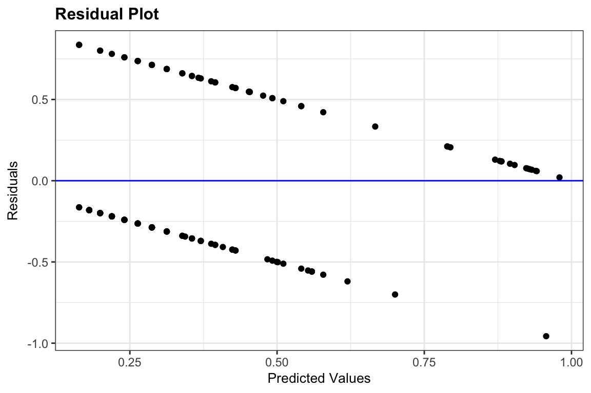
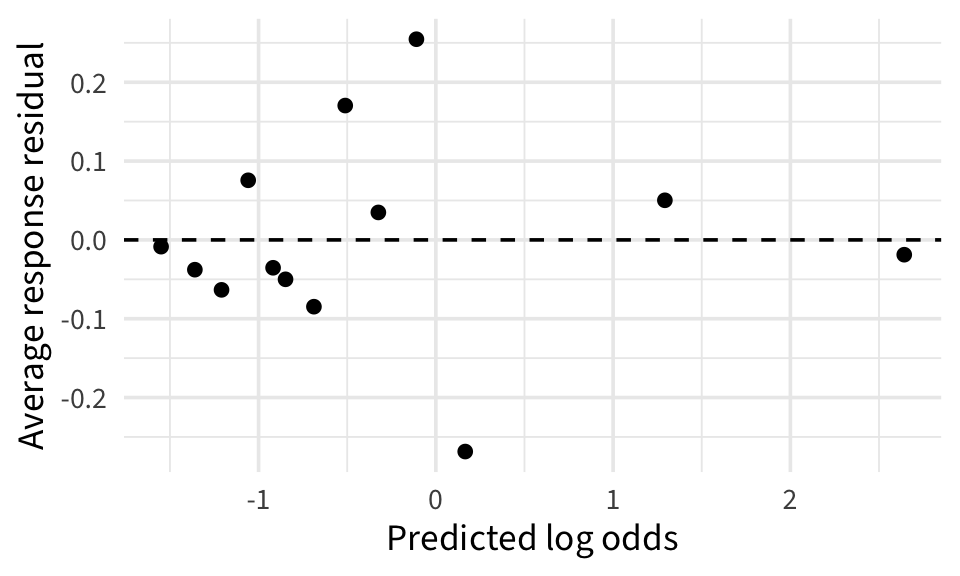
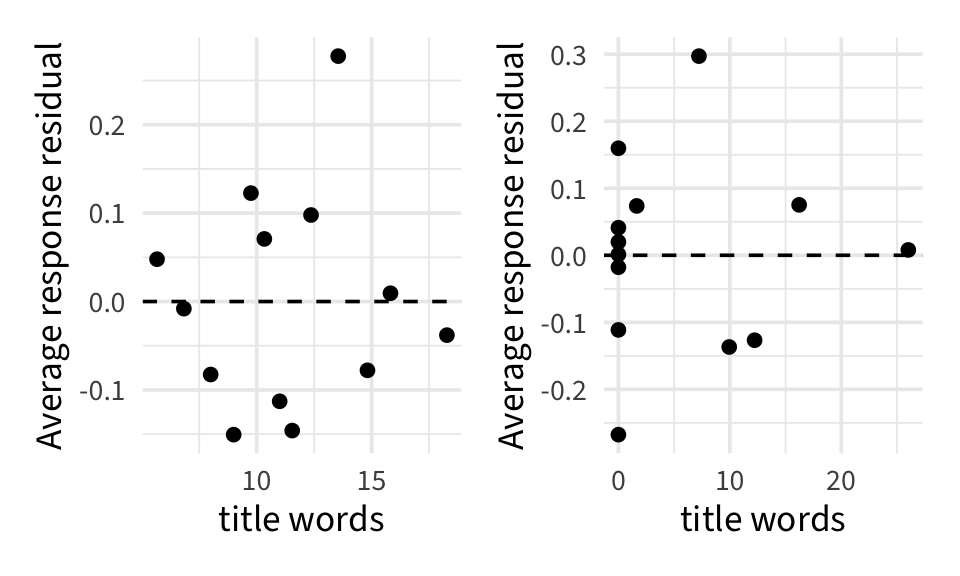
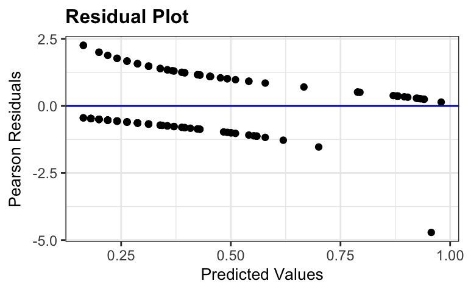
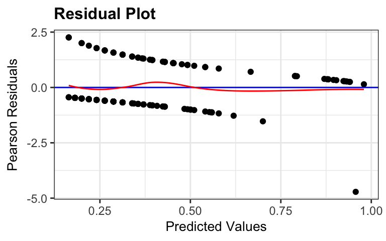
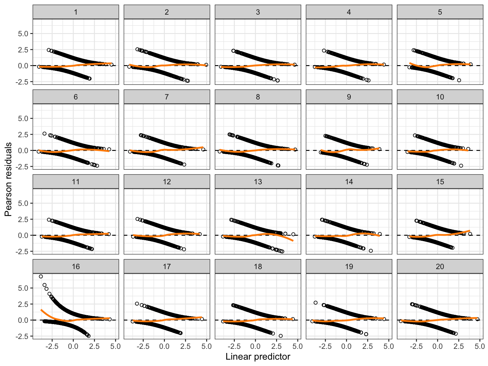
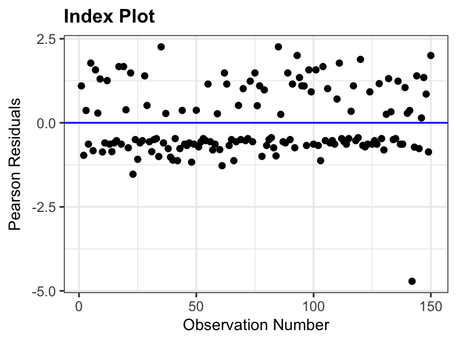

This dataset has information on 150 news articles, some that are real and some that are fake. Our goal is to build a statistical model to explain type based on features of the article
type: “real” or “fake” / type_num: 0 (real) or 1 (fake)
title and url of article
title_words: how many words in the title
title_has_excl: whether title has exclamation
title_caps_percent: percent of title in capital letters
negative: Percent of words that have negative sentiment
positive: Percent of words that have positive sentiment
title
url
type
title_words
title_has_excl
title_caps_percent
negative
positive
type_num
Clinton’s Exploited Haiti Earthquake ‘to Steal Billions of Dollars from the Sick and Starving’ ⋆ Freedom Daily
The coefficients in logistic regression are estimated by finding the \(\widehat{\beta}_0, \ldots, \widehat{\beta}_p\) that maximize the probability of the observed outcomes
We are 95% confident that a one-word increase in title length is associated with an increase in the odds of being fake news by between 0.8% (a 1.008 factor increase) and 26.7% (a 1.267 factor increase), holding all other variables constant.
fake news example
How do the odds of being fake news change for an increase of 10 words in the title length?
We are 95% confident that a 10-word increase in title length is associated with an increase in the odds of being fake news by between \(e^{.08} = 1.08\) (an 8% increase) and a factor of \(e^{2.37} = 10.69\) (a 1000% increase!), holding all other variables constant.
Pause for the most dramatic logistic regression story I’ve ever heard
How can we tell if inference is correct?
Recall
LINE conditions must be met for inference to be valid
If Linearity fails, the line doesn’t actually describe the relationship and everything breaks
If INE fails, we can still interpret our coefficients (the geometry is still correct), but cannot trust inference
Confidence intervals too narrow
p-values too small
What are the conditions for logistic regression model?
Linear relationship between the log odds (logit) and the predictors
Independence: no pairs, clusters, etc.
Randomness: we have a random sample from the population or the data were collected from a randomized experiment
“Residuals”
In logistic regression, we’ll work with residuals on the response scale:
resid_panel(news_mod, plot ="resid", type ="response")

Binned residuals
Idea: If we group data points based on predictor, we can compute the mean response residual within each group and end up with something that looks more like an OLS residual plot
Calculate response residual
Order observations either by the values of the predicted log odds/probabilities, or by quantitative predictor variable
Use the ordered data to create g bins of approximately equal size. (Default: \(g = \sqrt{n}\))
Calculate average residual value in each bin
Plot average residuals vs. average predicted log odds, probability, or predictor value
Binned residual plot
Using 13 bins
You will recreate this during the R activity today

Binned residual
Nonlinear trend may be indication that squared term or log transformation of predictor variable required
If bins have large average residuals (in magnitude)
Look at averages of other predictor variables across bins
Interaction may be required if large magnitude residuals correspond to certain combinations of predictor variables
Check binned residuals against X variables

Residuals vs categorical predictor
Calculate average residual for each level of the predictor
If the model is correct, then the expected (average) Pearson residual within each bin should be close to 0
A smoother should be approximately horizontal line at 0
resid_panel(news_mod, plot ="resid", type ="pearson")resid_panel(news_mod, plot ="resid", type ="pearson", smoother =TRUE)


Smoothers can help draw attention to major flaws, but there will always be variation from the horizontal!

Checking linearity is hard!
Independence
We conduct inference assuming we have \(n\) pieces of independent information from the \(n\) data points
If the data points are dependent, we have less pieces of information than \(n\) and our inference is overoptimistic
Best to assess based on description of the data:
Are they grouped in some way?
Measurements over time?
Spatial component?
The reason we make an index plot is to see if our data is ordered in some way
Independence: index plot
resid_panel(news_mod, plot ="index", type ="pearson")

Randomness
A dataset containing data behind the study “FakeNewsNet: A Data Repository with News Content, Social Context and Spatialtemporal Information for Studying Fake News on Social Media” https://arxiv.org/abs/1809.01286. The news articles in this dataset were posted to Facebook in September 2016, in the run-up to the U.S. presidential election.